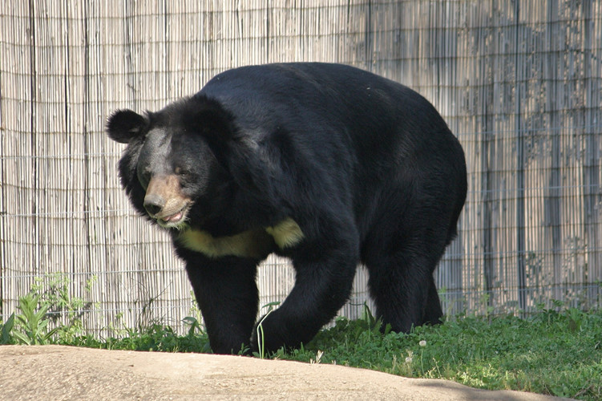

Gấu ngựa
Gấu ngựa có khu vực sinh sống trải rộng từ đông sang tây châu Á. Chúng có thể tìm thấy trong rừng vùng đồi núi ở Đông Á và Nam Á, bao gồm một dải từ Afghanistan, Pakistan, sang bắc Ấn Độ, Nepal, Sikkim, Bhutan, Đông nam Á, đến tận đông bắc Trung Quốc, và cả Đài Loan, Nhật Bản. Chúng có thể sống trong những khu vực lên tới cao độ 3.000 m (9.900 ft). Ở một vài khu vực, gấu ngựa sống chung địa bàn với gấu nâu (Ursus arctos) là loài to hơn và khỏe hơn. Tuy nhiên, gấu ngựa có ưu thế trước đối thủ vì khả năng leo trèo giỏi giúp chúng lấy được hoa quả và các loại hạt trên cây cao. Môi trường sinh sống của gấu ngựa có nơi cũng trùng với gấu trúc như khu bảo tồn Ngọa Long, Trung Quốc. Nòi gấu ngựa tìm thấy ở Đài Loan là nòi gấu đen Đài Loan
Gấu ngựa có chiều dài khoảng 1,30 - 1,90 m. Con đực cân nặng khoảng 110 – 150 kg còn con cái nhẹ hơn, khoảng 65 – 90 kg. Tuổi thọ của gấu khoảng 25 năm.
Gấu ngựa là loài ăn tạp, chúng ăn các loại thức ăn như hoa quả, quả mọng, cỏ, hạt, quả hạch, động vật thân mềm, mật ong và thịt (cá, chim, động vật gặm nhấm cũng như các động vật có vú nhỏ hay xác súc vật).Tuy nhiên cũng như những cá thể khác trong họ nhà Gấu ngày nay, hạt quả và cỏ đã không còn khả thi trong khẩu phần thức ăn của chúng bởi các tác hại của tật ăn tạp. Gấu ngựa là loài ăn thịt nhiều hơn anh em của nó là gấu đen Mỹ; dù vậy thịt chỉ là một phần nhỏ trong khẩu phần ăn.
Ngày nay, gấu ngựa chỉ được săn bắt hợp pháp ở Nhật Bản và Nga.[2] Ở Nga, 75–100 con được săn bắt hàng năm, tuy nhiên con số không chính thức là 500 mỗi năm.[1] Môn thể thao săn gấu ngựa của người Nga được hợp pháp hóa năm 2004. Theo một bài viết năm 2008 đăng trên The Sun, Câu lạc bộ săn bắt slavơ của Nga cung cấp dịch vụ chuyến đi săn 4 ngày đảm bảo bắt được gấu với chi phí £16.000. Bài báo chỉ ra rằng khách hàng nhận được giấy phép săn gấu ngựa bao gồm những người từ Anh, Hoa Kỳ, Đức, Tây Ban Nha, Ba Lan và Phần Lan.[3]
Tại Việt Nam nạn săn bắt gấu ngựa để lấy mật gấu đã gây ra nạn hàng trăm con gấu bị nhốt trong cũi và đặt ống vào bụng để rút mật. Ước tính vào năm 2005 là Việt Nam có 4.500 con gấu nuôi trong cũi với mục đích này. Song vì giá mật ngày càng giảm, chủ nuôi không có lời nên hàng trăm con bị bỏ đói cho chết, rồi đem xẻ thịt. Thịt gấu và tay gấu được dùng trong Đông y. Tính đến năm 2018 thì không tới 800 con vẫn bị nhốt để lấy mật ở Việt Nam.